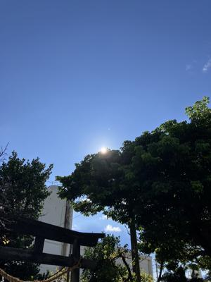
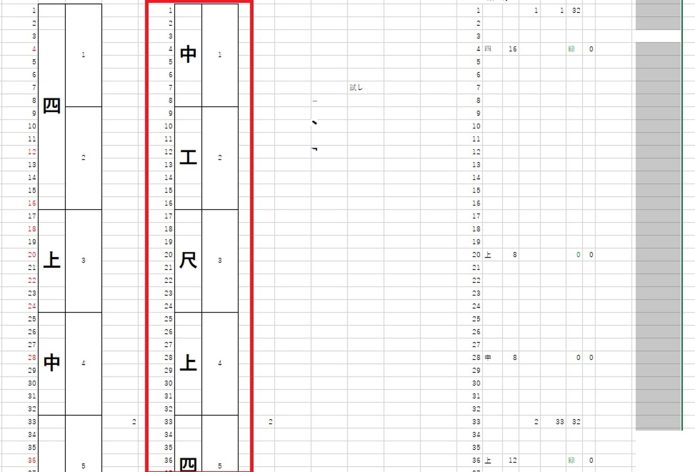
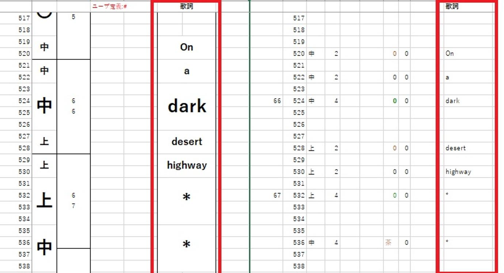
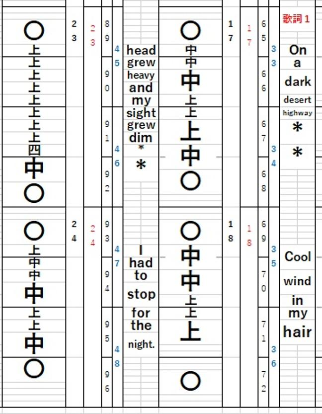

うるがいの話 ある日
最新: 歌詞展開を自動化【うるがいの話 ある日】とは 一日だけのプログです
『うるがいの話』の最新一日だけのプログで、通信料が少なく経済的だ。カニの画像をクリックすると全ての日付が載る『うるがいの話』サイトを表示します
|
|
【うるがいの話】 うるがい(ｳﾙｶﾞｲ urugai)とは、『もずくがに』の名前でとても大きくなります。 |
|---|---|
|
|
【カミマヤーの話】 猫のことを方言でマヤーといいます。カミマヤー（kamimayaa）とは、神の猫のことです。 |
|
【たながぁの音楽】 たながぁ（ﾀﾅｶﾞｰ tanagaa）とは手長えびのことで、何種類かあり大きいのは車 エビぐらいになります。 |

|
【ぶながぁの話】 ぶながぁ(ﾌﾞﾅｶﾞｰ bunagaa)とは、赤い髪の毛、赤い身体、そして身長は１ｍ２０ｃｍ ぐらい、川の蟹を食べているの目撃された。場所は沖縄県国頭郡大宜味村のと ある村僕の隣近所に住んでいる爺さんから、聞いた話です。 |
|
|
【ギーマの話】 ギーマ(giima)とは、山原の里山に咲くスズランに似た、 花を付けます。実は食べられます、 気が付くと口の周りが紫になっています。 |
2025年08月25日 (月）歌詞展開を自動化
16:20

視聴回数が多いユーチューブ動画『ホテルカリフォルニア』の工工
四を作成したところ、歌詞を手作業で打ち込んだ直後、止めた！。
とんでもなく時間がかかる・・・、プログラムで対応することにし
た。先週の木曜日から作業を開始、やっとこさ完了。１００％では
ないが、９５％ほどは自動化できたかも。ところで、もともとのエ
クセルの作業シートで、使われない列が残ったままで放置していた

この不要な列に、楽譜データの歌詞を展開。スムーズにいった。前
から、予測していたかのように（不思議である）。

勘所の列の横に、歌詞の列を展開した。フムフム、まいいか。

そして、既にアップロードしたユーチューブ動画に工工四がダウン
ロード出来るようにした。さて、利用する人がいるのか、大いに興
味がある。
『イーグルス ホテル カリフォルニア 三線』の工工四(pdf)は
初めて歌詞を自動化した工工四